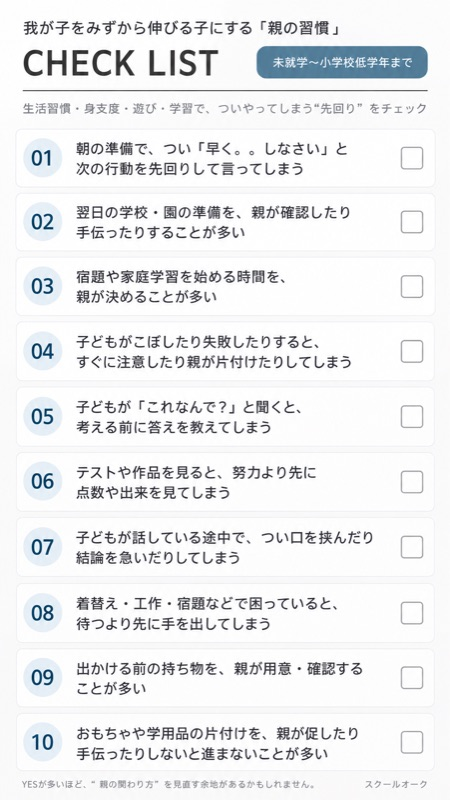
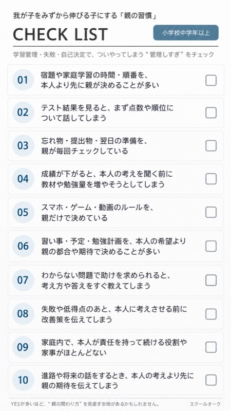
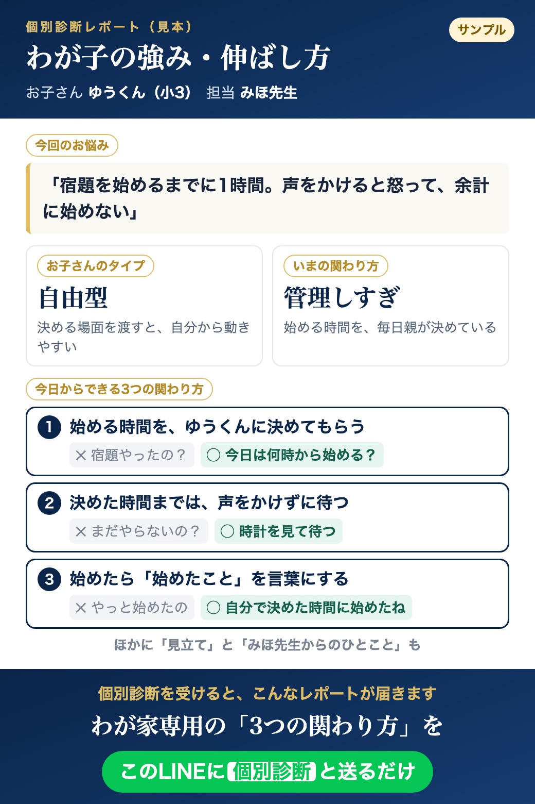

「この関わり方で、いいのかな」
その迷いに、寄り添う場所。
親が自信を持って関われるようになると、「言わないと動かない子」も、自分から動き出します。3人の子どもを東大に送り出した母・高木美保が、親の関わり方を一緒に考えます。
LINEに登録すると、お子さんの学年に合わせた「親の習慣」チェックリストが届きます。回答してくださった方には、特別動画もプレゼントしています。
Everyday
今日こそ、言わないつもりだったのに。
愛情があるからこそ、言い続けてしまう。でも言えば言うほど、子どもは動かなくなる。
それは、あなたのせいではありません。「どう関わればいいか」を、家庭に合わせて教わる機会がなかっただけです。
Our belief
親の学習塾は、
子育ての正解を代わりに出す場所ではありません。
親自身が、自信を持って子育てできるようになる場所です。
誰かに正解を教えてもらっても、毎日の子育ての場面で迷うのは親自身です。だからこそ、わが家で大切にしたいことを決め、子どもを理解し、日常の中で試していく。その積み重ねで、迷ったときに自分で判断できる親になります。そして親が迷わず関われるようになると、子どもも、言われなくても自分から動き出すようになります。
3 steps
親自身の土台から、3つのステップで。
気合いや根性で「怒らないようにする」のではなく、ひとつずつ積み上げていきます。
STEP 1
親自身の軸を整える
子育ての考え方や姿勢を見直し、わが家で何を大切にするのかをはっきりさせます。
STEP 2
子どもを理解する
発達段階や個性を知り、先回りせずに成長を支える関わり方を学びます。
STEP 3
日常の中で実践する
具体的な悩みに向き合いながら、学んだことを家庭で試し、少しずつ調整していきます。
4 types
同じ言葉でも、子どもによって届き方は違います。
大切なのは「正しい声かけ」を覚えることではなく、わが子に響く関わり方を知ることです。
こだわり型
「なぜやるのか」がわかると動きやすい。
共感型
「一緒に」が安心につながりやすい。
目標型
ゴールが見えると集中しやすい。
自由型
自分で決める余地があると動きやすい。


Free gift
まずは、いまの関わり方を
振り返ることから。
10個の項目にチェックするだけで、ついやってしまう「先回り」や「管理しすぎ」に気づけます。お子さんの学年（未就学〜低学年／中学年以上）に合わせてお送りします。
- LINEで学年を選ぶだけで、すぐに届きます
- 当てはまった個数を送ると、みほ先生が2日以内にメッセージをお送りします
- 回答してくださった方に、特別動画「『伸びる子』の親は、ここを見ている」をプレゼント
Instructor
「私も最初は、『勉強しなさい』しか言えませんでした。」
スクールオーク塾長・高木美保（みほ先生）。国立大学で発達認知学・言語発達学・大脳生理学を専攻後、教員・河合塾指導員を経て、金沢・片町でスクールオークを開設。母子家庭で必死になるほど子どもとの関係がギクシャクした時期を経て、声かけと家庭環境を見直してきました。

Personal session
もっとじっくり話を聞いてほしいときは。
「うちの場合はどうしたらいいの？」というときは、みほ先生とZoomで30分、今のお悩みをじっくりお話しできます（1,000円）。面談のあとは、わが家に合った「3つの関わり方」を声かけ例つきでまとめたレポートもお届けします。
